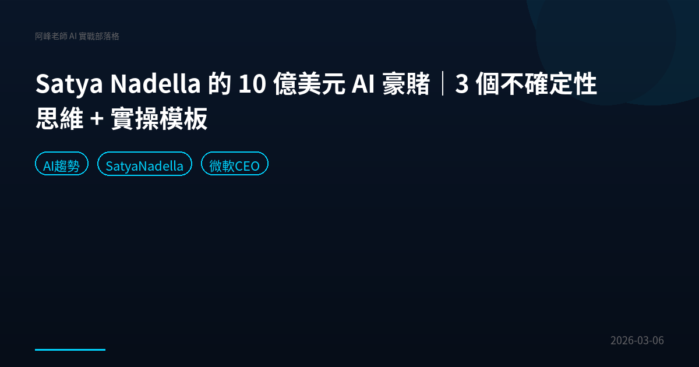

2026-03-09
台灣軟體業的 AI 產品化之戰：從接案代工到打進國際市場的關鍵轉折
數發部長、軟體工會理事長、瑞洋資訊總經理深度對談：台灣軟體如何從 Project 走向 Product，搶攻 AI 兆元商機。

2026-03-08
NotebookLM Cinematic Video Overviews 完整解析｜簡報秒變電影感影片
Google NotebookLM 推出 Cinematic Video Overviews，結合 Gemini 3、Veo 3、Nano Banana Pro 三大 AI 模型，把簡報自動變成電影感影片。功能解析、應用場景與實戰建議。

2026-03-08
ChatGPT Skills 正式登場！比 GPT 5.4 更值得注意的新功能
ChatGPT 悄悄上線 Skills 功能，讓你幫 AI 設定固定工作流程。本文完整解析 Skills 操作指南、Manus 匯入教學，以及企業如何用 Skills 解決 AI 產出不穩定的問題。

2026-03-08
AI 翻譯為何翻不好「林宅血案」？元首口譯揭開文化轉譯的真正難題
華視林宅血案訪談推向國際，AI 翻譯卻慘不忍睹。元首口譯葉妍伶接手後揭露 AI 翻譯三大盲區：同音字辨識、簡體語境偏差、文化意象轉換。本文深度分析 AI 翻譯的限制與人機協作的未來。

2026-03-08
Claude Skills 完整教學：Skills vs 提示詞 vs MCP 差在哪？含實戰操作指南｜2026
一次搞懂 Claude Skills 是什麼、跟提示詞和 MCP 的差別。含從零建立 Skill 的 5 步驟指南、進階組合技玩法、企業培訓實戰經驗分享。

2026-03-08
Cursor進入戰時狀態：Claude Code 25倍補貼搶市場，AI寫程式工具未來分析
富比世揭露 Claude Code 每月收 200 美元實際成本 5000 美元，Anthropic 用 25 倍補貼搶市場。Cursor 營收 20 億卻面臨 Claude Code 六個月超車的危機。阿峰老師深度分析 AI 寫程式工具大戰。

2026-03-08
Gemini 3.1 Pro 實測：5 分鐘做出高質感網頁｜AI 網頁生成教學
Google Gemini 3.1 Pro 實測報告，只要 5 分鐘就能生成完整 Landing Page。三個實測場景分析、操作指南、適用對象一次看完。

2026-03-07
產品經理要消失了？OpenAI 內部 5 個震撼變化＋台灣企業導入 AI 實戰指南
OpenAI Codex 產品負責人揭露內部真相：大部分程式碼是 AI 寫的、PM 角色被壓縮、AGI 瓶頸是人類自己。阿峰老師加碼分析台灣企業該如何導入 AI。

2026-03-07
八千萬人閱讀的 AI 末日預言｜Matt Shumer 警告大事要發生了
AI 新創創辦人 Matt Shumer 在 X 發文獲 8300 萬閱讀，警告 50% 白領工作將在 1-5 年消失。深度解讀他的五個建議，以及 Anthropic CEO 的超級國家思想實驗。

2026-03-07
Gemini Gems 完全攻略：5 個 AI 員工幫你每天省 3 小時｜阿峰老師
Gemini Gems 功能教學，用 5 個實戰案例打造專屬 AI 員工：說人話文案、文件分析、數據整理、高情商溝通、學習助手。含 3 個進階技巧，培訓一次終身受用。

2026-03-07
鍵盤敲越多越危險？AI 時代的個人生存法則｜簡立峰博士觀點
前 Google 台灣董事總經理簡立峰博士揭露 AI 時代職場真相：鍵盤工作比例越高越危險，但一人公司是巨大機會。含獨家自我檢測法和一人公司實戰指南。

2026-03-07
2026必懂17款AI工具完全指南｜Gemini、Claude、Cursor、Manus四大分類評測
結合數位時代評選、a16z百大排行與400+企業培訓經驗，精選17款AI工具完整評測。從核心助理到AI Agent，告訴你每款適合誰、什麼時候該用。

2026-03-06
10 個素人用 Claude Code 做出的真實產品｜最快 4.5 小時上線
設計師、廣告導演、露營旅館老闆⋯⋯10 個非工程師背景的人，用 Claude Code 做出 APP、SaaS、自動化系統。最快只花 4.5 小時。

2026-03-06
Satya Nadella 的 10 億美元 AI 豪賭｜3 個不確定性思維 + 實操模板
微軟 CEO Satya Nadella 在 2019 年砸 10 億投資 OpenAI，本文拆解他的 3 個 AI 決策思維，加上阿峰老師獨家「降低門檻+提高天花板」實操模板，教你用不對稱風險策略擁抱 AI。

2026-03-06
MacBook Neo 科技平權：一萬六千九就能學 AI 的時代來了
蘋果 MacBook Neo 教育價一萬六千九，跑得動所有 AI 工具。從 1980 年代的教育策略到 2026 年的 AI 普及化，科技平權的意義比規格更重要。附一台筆電學 AI 的四週行動指南。

2026-03-06
2028全球智能危機解讀：白領會被AI取代嗎？400家企業培訓的真實觀察
一篇文章讓道瓊跌800點。AI會讓白領大規模失業嗎？幽靈繁榮是什麼？阿峰老師從400多家企業AI培訓經驗，分析白領就業危機的真相與機會。

2026-03-02
AI 裁員潮來了？Block 砍 5000 人背後的真相與 5 步工作拆解法
Block 因 AI 裁員 5000 人，Anthropic 因拒絕開發自動武器被川普封殺。三個關鍵觀察加上獨家 5 步工作拆解法，教你找出自己的不可取代區。

2026-03-02
Claude 被封殺、Block 裁員一半：AI 時代職場生存指南（2026）
Block CEO Jack Dorsey 裁掉 4,000 人，說是因為 AI；Anthropic 因拒絕移除安全限制遭美國政府全面封殺。這兩件同時發生的大事，說明了 AI 取代人力已不是預言，而是現在式。本文深度分析數據、各大廠立場，並告訴你現在該怎麼做。

2026-03-02
AI 時代創業不再靠資金，靠的是這六個步驟｜阿峰老師
Daniel Priestley 的六步驟創業框架 + 台灣企業培訓實戰觀察。AI 降低了技術門檻，但真正稀缺的是決策勇氣和行動力。附台灣職場實戰案例。

2026-03-02
NotebookLM 逆向工程教學：3 步驟免費拆解百萬爆款影片結構（含完整提示詞）
用 Google NotebookLM 免費拆解百萬播放影片的底層結構，轉化為你自己的腳本藍圖。本文含完整提示詞範本、5 種進階應用場景，以及內容創作者的實戰心得。

2026-03-01
Vibe Coding 入門指南：工具人時代結束，用 AI 協作解決真問題
矽谷工程師被裁、公司錢拿去買 GPU。AI 時代工具人正在被淘汰，Vibe Coding 是你從工具人躍遷為擁有者的最快路徑。含 5 步驟入門實戰、台灣企業案例。